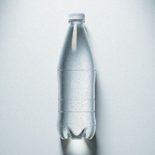

Mineral Water
September 28, 2025 by Shakyra Cornelius

Drinking mineral water is essential for maintaining a healthy balance of minerals in the body. It contains
vital nutrients like calcium, magnesium, and potassium, which support bone health, muscle function, and
overall cellular activity. Unlike plain water, mineral water naturally replenishes these essential elements,
especially for individuals with deficiencies. Regular consumption can also aid in hydration and improve
digestion, making it a valuable addition to a balanced diet.
Moreover, mineral water can help detoxify the body by flushing out toxins and promoting kidney health. Its
natural composition often includes bicarbonates, which can neutralize stomach acid and alleviate indigestion.
Many people find mineral water to have a refreshing taste, encouraging them to drink more and stay hydrated.
By choosing mineral water, you can enjoy both the health benefits and the satisfaction of a pure, natural
beverage.
Plain Water
October 1, 2025 by Shakyra Cornelius
Drinking plain, non-mineral water is essential for maintaining proper hydration and supporting overall health.
It helps regulate body temperature, transport nutrients, and remove waste products through processes like
sweating and urination. Unlike sugary or caffeinated beverages, plain water is calorie-free and does not
contribute to dehydration. Regular consumption of plain water can also improve skin health, boost energy
levels, and enhance cognitive function.
Plain water is a versatile and accessible choice for staying hydrated throughout the day. It is free from
additives, making it a pure and natural option for quenching thirst. Drinking sufficient amounts of plain
water can prevent dehydration-related issues such as headaches, fatigue, and dizziness. By incorporating plain
water into your daily routine, you can promote better digestion, support kidney function, and maintain overall
well-being.